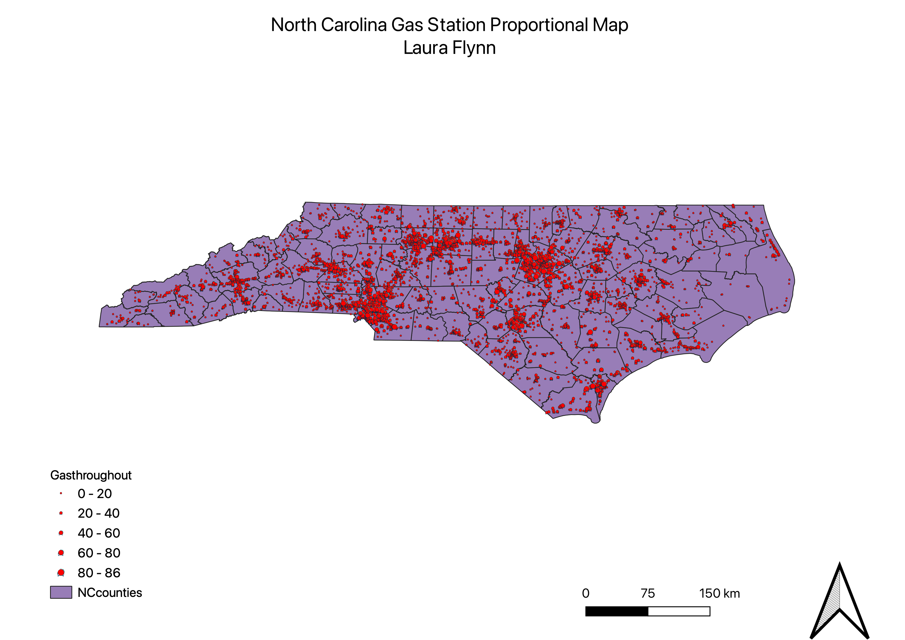
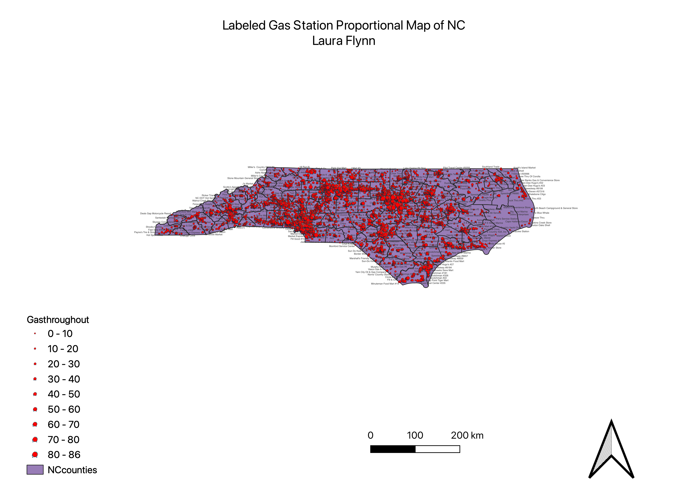
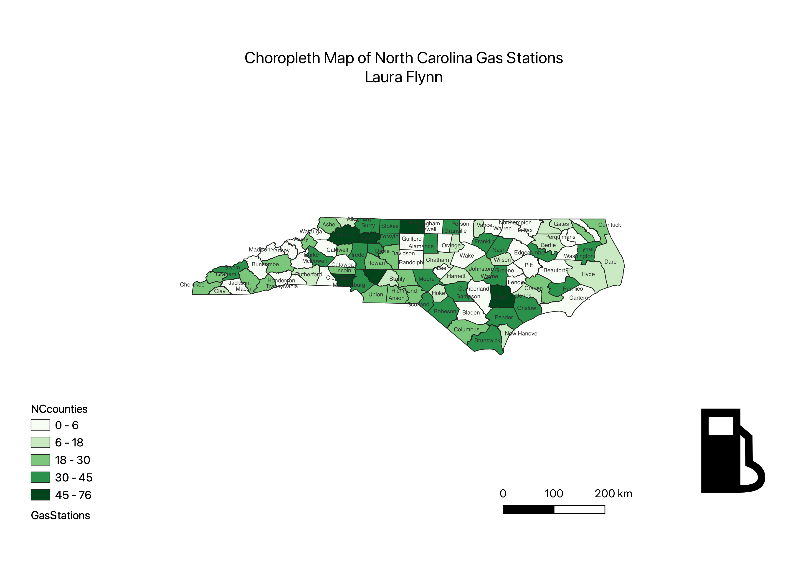

Homework 8
Laura Flynn
The reason I picked gas stations is truly unknown to me. I saw this data set when I looking up vector data and honestly I just thought it would be cool to see how many gas stations were in North Carolina and see where most of them are!
Proportional Symbol Map of North Carolina Gas Stations

Proportional Symbol Map of North Carolina Gas Stations, Labeled

Choropleth Map of North Carolina Gas Stations

Data used for this project
GEOJSON
Link to where data was found